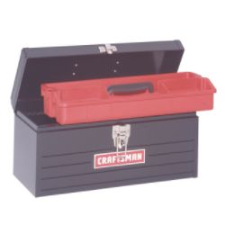

The Widgitmaster's Travelling CNC Medicine Show
Are you into CNC Mini Routers? Be sure to check out our G-Wizard CNC Router Speeds and Feeds Calculator. It's the first Calculator designed especially for CNC Routers, and the link will tell you why.
Recently I purchased one of the immaculately constructed mini-routers that Widgitmaster from CNCZone has been selling on eBay. The little bugger was so adorable I just couldn't resist. I have no idea what I will do with it, but then people tell me that's true of most of the tools I buy!
This little router has 8" of X travel, 4" of Y travel, and just a scosh under 2" of Z travel.
In Praise of Xylotex
My first challenge was to figure out what to do about electronics for the thing. Having just read a write up on Xylotex, i decided to give them a try. Their 3-axis complete kit is very reasonable, and is perfect for the mini-router. This kit has all the electronics and step motors you need to run a 3-axis machine:
Xylotex complete 3-axis kit is simple and inexpensive...
I needed an enclosure for these electronics, and I wanted something cute to match the router. Somehow, I also thought it would be cool if I could easily drag the router off somewhere to demonstrate it, perhaps for a club or some friends. I hit on the idea of using a small Craftsman toolbox:

Hence the "travelling medicine show" aspect of the project was born. I must say that once I had fabricated a mounting tray for the electronics, I had the whole Xylotex arrangement up and running with Mach 3 and spinning the shafts in about an hour and a half. I would definitely use the Xylotex kit again for a small machine!
Mounting the Electronics in the Toolbox: A Tale of Polyboard, Taps, and Mystery Metal
Having decided to put the electronics into a toolbox, my next thought was to create some sort of a mounting plate on which to attach the power supply and the Xylotex board. My original thought was a piece of aluminum, but I happened to spy a half forgotten package sitting in a corner of my office that needed to be dragged down to the shop. Based on a write up on the Industrial Hobbies site called "Saving Your Table", I had ordered some cheap poly cutting boards off the Internet. I got like 6 boards for $24 or something. This material looked like a good thing to make my mounting plate out of, and it would be fun to work with a new material. I had never messed with plastics much save for some experiments with plexiglass associated with my old PC modding activities--pre-machineshop to be sure!
The polyboard worked out well. It mills beautifully, without melting onto the endmills. It drills and countersinks as well. I set the board up with holes drilled for power supply, Xylotex board, and 4 mounting standoffs. The latter I turned from some "mystery metal" that I thought was 12L14, but it became obvious it was something tougher once I got to working with it. Here is what the board wound up looking like before I mounted anything on it or cleaned it up. You can see the standoffs underneath:
Top of board. Stand-offs are mounted using countersunk 1/4-20 flathead cap screws. The little cutout at lower left is a handle cutout--this piece of poly was originally a kitchen cutting board!
Underside with standoffs...
The standoffs were just turned quickly on my lathe. I got them to approximately the same length, faced them, drilled them for a 1/4-20 tap, and the ran the parting off tool. That last step was my first hint they weren't 12L14 as they chattered something fierce!
Stand-off. The gunk is some tape adhesive. When I finish I will clean everything up with brake cleaner so you won't see that stuff...
This was my first experience with countersunk flat head cap screws, and I have to say, I like them better than the socket head cap screws I had been using for everything. I ordered several boxes of them with my last Enco order, so you'll see them cropping up more often in my projects. FWIW, when you countersink, you just need to countersink to a depth of 1/2 the diameter of the flat head. You can take my tip and use a spot drill to do the countersinking and combine the spotting and countersinking chores in one operation too.
Next it was time to tap the standoffs. I decided to try power tapping, which I had read about in various places. Basically, I stuck the tap in an Albrecht chuck on the mill, dialed in the slowest speed, made sure the quill could feed freely, and loosley feed it in. The first one worked pretty well, albeit taking several tries and backing off. The tap seemed to be having some difficulty cutting, but I assumed it was my inexperience at power tapping. I did not put together the chattering cutoffs with the difficult tapping to realize I had something other than 12L14 quite yet.
The second standoff was a write-off--the tap broke off before I was a quarter of the way into the hole. Doh! ?!@#$%!!! It was getting late, so I shut down the shop and went to bed. The next morning, as I was turning and parting a new stand off to try again with, it dawned on me that what I was cutting was something a lot tougher than 12L14. I decided to leave the power tapping aside and hand tap in the interest of moving through the project and because I wasn't too sure what I was dealing with.
I also took the opportunity to try some upgraded taps I had bought from Enco along with the flat head cap screws:
Left to right: 3 flute 45 degree spiral flute plug tap, thread forming plug tap, thread forming bottoming tap...
Having broken my Craftsman tap, it seemed as good a time as any to try out these new "professional" taps. Like me, I am sure you've read in many places that hardware store taps are junk and shouldn't be used. Perhaps you are also like me in thinking, "Yeah, but hardware store taps are what I've got and they've worked for me so far." In fairness, I did buy the new taps with a thought I would try them and see how much better they are. I just hand't gotten around to it until the mystery steel and broken tap forced my hand.
Since I was dealing with brand new (and somewhat expensive) taps, I decided not to try power tapping. Too much experimentation can be a bad thing for progress. So I had 3 spacers to thread, and 3 new taps to try. I stuck each spacer into my Kurt vise and locked it down against a V-block and then went at it.
I first tried the bottoming thread forming tap. These are usually recommended for aluminum and mild steel, but I thought it worth a try here too from a learning standpoint if nothing else. I found it pretty tough going, but manageable. I used Tap Magic with all 3 of these taps.
Next I tried the thread forming plug tap. It was easier, but still took a fair amount of effort. Evidently the tapered end gives things an easier start compared to the bottoming tap.
Lastly, I fired up the spiral point tap. It's a Cleveland 45 degree spiral flute tap. This was the hands down winner by far! Turning effort was the lowest I've ever felt while tapping. Control was excellent. The 3 flutes sent up some wicked steel splinters out the top of hole, so you'd want to be careful around those. All in all, I was amazed at how much better this tap worked than anything I have used in the past. Cost from Enco was $8.86. You can bet I'll be on the lookout for more of these and will want to eventually round up a full set. I wanted to try power tapping these because it was so easy to do by hand, but I had finished all the spacers, so that must wait for another day.
Final Toolbox Assembly
Here are the power supply and Xylotex board bolted onto the tray and wired up:
As you can see, there are very few connections required. The documentation was about 3 sheets of photocopy. Each axis has a color coded cable, and all the connectors and cables are made up for you, so you don't even have to fire up a soldering iron!
It fits in the toolbox real nice. I just drop the stepper and AC cables on top, then the toolbox tray goes on top of those, and we are ready to travel!
Installing the Step Motors on the Mini-Router
I didn't have any couplers handy, so I thought I'd have to wait for some to arrive by mail. By the next morning, I just couldn't stand waiting, so I went down to the shop and promptly turned some couplers on the lathe. They're just simple cylinders with a 1/4" through hole and 2 1/4-20 set screws. They seem to work just dandy on the mini-router. I'm not sure why I am not in need of helical beam or oldham style couplers, but I suppose the shafts just happen to mate up close enough. OTOH, maybe I will develop a problem at a later date, we will see.
They Make a Nice Pair, Don't They?
Having installed the motors on the mini-router, I got busy configuring Mach 3. Not much to do there either. Biggest issue was to turn off the E-Stop input, as I have no E-Stop on this system (not ideal, I know). After that, I went through the motor tuning procedure described in the Mach documentation and was able to get it all running within about an hour. The combination of the Xylotex kit and Mach 3 really made this a plug and play process.
Making the First Cuts
Now its time to actually make some cuts with this mini-router. The first step is to design the carving in Rhino 3d. I did a Hawaiian Turtle Glyph:
Turtle Glyph design in Rhino 3D...
Next, I exported the glyph as an IGES file. I don't know why, but OneCNC (my CAM program) seems to like that format better than Rhino3D. It's probably because I'm running the newly released Rhino 4.0. And then we import the glyph into OneCNC:
Turtle Glyph imported to OneCNC...
Now we're ready to create a toolpath to trace the glyph. I use OneCNC's Engraving Toolpath option:
Using the Engraving Toolpath option...
Next we select the cutting tool. In this case I'm calling for a 1/8" ball end mill. Actually, I had a little ball end burr on the Dremel, but this is close enough. It's going to recommend spindle speed, but I can't really control that. You can see it works out quite a few things including the feedrate and plunge rate too:
Tool selection...
Then we set the clearances. Rapid Z is how far above the workpiece (top of workpiece is at Z = 0) to move before trying to move rapidly. Final Z is how deep we want to cut the final engraving path. Rough depths is how deep each roughing pass should be:
Set clearances...
The toolpath has now been created, and you can see it on the screen. This display is called a "backplot". Green lines are cutting lines, while the red dotted lines are positioning the cutter by moving above the workpiece. You can see there are 2 sets of green lines, so it has to trace the figure twice at successively deeper cutting depths:
Turtle Glyph Backplot...
The last step is called "Posting". Posting simply means writing out the g-code so you can then load it and run it. This particular turtle glyph program is 635 lines. It is just text, and you can click here to look at it.
Okay, now I move from my office down to the shop, where I have just installed a new wireless router so I can reach back to my desktop. There, I load that g-code program into Mach 3, where it looks kinda like this:
Turtle g-code program is loaded into Mach 3...
Now how do we cut? First, we have to position the cutter at the right starting position. I do my drawings so that X = 0, Y = 0, and Z = 0 at the lower left corner, top of the material. I've bolted the wooden block down to the table, and I manually job Mach 3 over to that 0, 0, 0 point. Then I hit "Cycle Start". Assuming you've done everything right (oh, oh), you will get a turtle back not long after!
Here's what they look like:
Flock o' turtles!
These are not too bad considering all I had to cut with was the cheezy ball burr that came with the Dremel. I have some real 1/8" and 1/16" ball end mills on order that should produce a nicer result.
Meanwhile, this has been the world's fastest and easiest router to get to first chips.
EZClamps
This is the second thing I tackled with the mini-router. I didn't know if it would cut aluminum or not, but it seems to do just fine. I wanted some clamps to make it easy to hold stuff on the table, so I whipped up this design in Rhino 3D:
I loaded a 1/16" ball mill into the Dremel and had at it:
I didn't let it finish, because it would have taken several hours. Feedrate was 9 ipm, but had to be slowed to 5 ipm at the very beginning of each depth pass. Like the turtle, I used OneCNC to generate the G-codes. to hold the aluminum block I just superglued it to a piece of poly board which was then held to the router table with T-nuts. Very cool!
The finish is actually a bit nicer than it looks in the picture. I'm sure there's a lot that could be done through experimentation to improve finish and speed up the overall operation of it. Click here to download a short video clip of the router cutting the aluminum.
One peculiarity of the whole process. OneCNC, my CAM program, has a feature to simulate what will happen if you run the g-code. It accurately predicted some "islands" would be left behind:
See the little blips that stick up around the clamp?
These same islands are visible in the photo above of the real thing. The islands are due to the stepover having been set to 75%. This just means that adjoining cutter paths only have 25% overlap which left some gaps.
Plunge Milling
I'm going to try an experiment in plunge milling next to try to make the EZClamps go faster. The idea is to drill a chain of holes in the outline and then to use the milling operation to smooth that ragged series of holes into a nice smooth path. OneCNC makes this extremely easy because it has a feature called "hole recognition" which finds all the holes of each size in the drawing and figures out how to drill them all at once.
So, I made a Rhino model that had a chain of 1/8" diameter holes and imported that into OneCNC like this:
OneCnc predicts it will take 9 minutes to drill the holes and then 16 minutes to mill out the chain for a total of 25 minutes. If it produces a decent result without breaking the endmills that would be a big improvement over the predicted 1 hour and 40 minutes that pocketing it out with a 1/16" end mill would take.